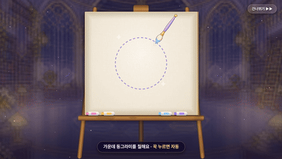

소환 시안 적용 — 시안 ↔ 게임 · 전 ↔ 후
PD 확정 시안 summon_c(소환 탭 C) · summon_flow_na(소환 흐름 나 「이젤 캔버스」 + 중복 → 별가루)를 게임에 넣은 결과입니다.
시안 그림은 시안 HTML을 같은 순간에 멈춰 찍었고(build_mock.mjs), 게임 그림은 같은 결과 · 같은 지갑으로 실제 연출을 돌려 찍었습니다(tools/summon_apply_capture.gd).
예시 지갑: 채색석 51,843 · 별가루 2 · 기억 포인트 11 · 신화 조각 43, 플로라 픽업 첫날. 10회 결과는 시안 ⑥과 같은 열 명(새 아이 예슬 · 채원 · 플로라, 중복 7명 = 별가루 +38, 신화 조각 +3).
- 코드: 소환 화면
scripts/ui/summon_page.gd(menus.gd에서 옮김, menus.gd는 부르는 줄만) · 공용 판/글자/장식scripts/ui/summon_fx.gd· 연출scripts/gacha_show.gd(새로 씀) · 셰이더assets/ui/fx/summon_*·atelier_*·gold_ink - PD 규칙: 등급 색은
GradeStyle(SS = 속성 색 · 신화 = 무지개, 금빛은 S 등급 · 가는 테만) · 칠하는 동안 물감 · 시간 · 붓이 등급과 상관없이 같음(등급은 ② 물감에서 처음) · 효과는 셰이더 · 입자 겹(평면 그림 붙이기 없음, 빛살 · 물감 줄기 끝은 부드럽게, 세로 무지개 기둥 없음) · 중복 아이는 별가루만 - 검사: release_ui 80/0 · back_button 65/0 · first_session 49/0 · fb70_overflow 41,036/0 · 안내 「summon」 짚는 칸(소환 메뉴 · 「10회 소환」) 1280 · 1600 모두 찾아짐
1. 소환 탭 (summon_c)
2. 소환 흐름 — 시안 ↔ 게임 (summon_flow_na)
3. 소환 흐름 — 전 ↔ 후 (게임)
4. 움직임 (1280×720)
게임 화면을 실제 속도로 녹화(약 12~13fps 프레임 → mp4). GIF는 480px · 10fps 미리보기입니다.
